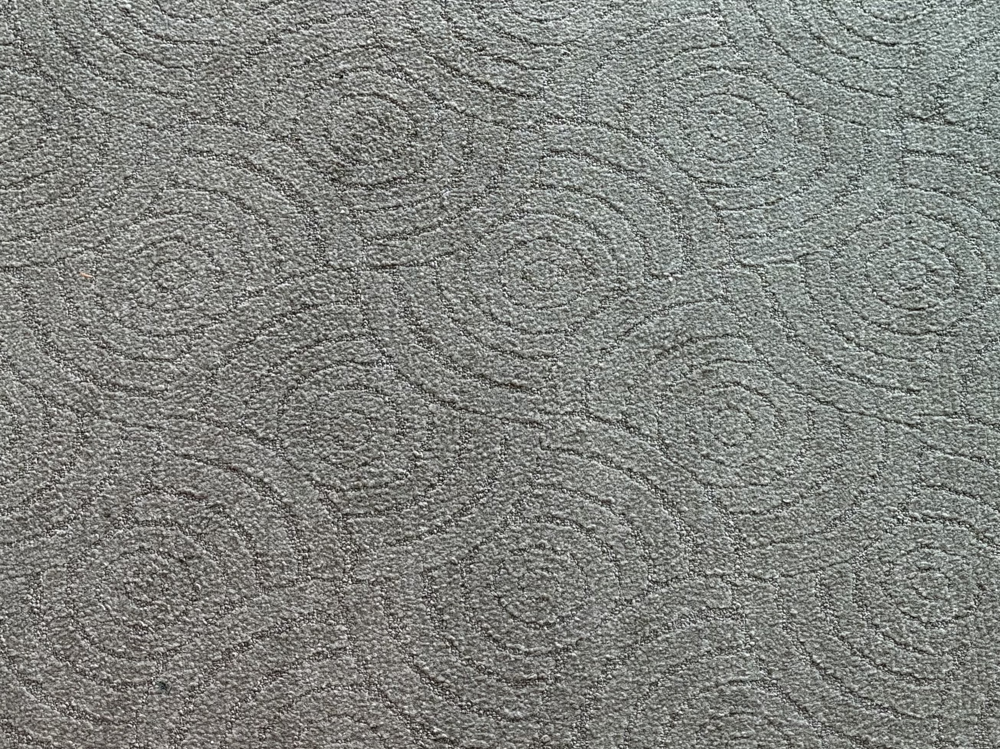

기독교기념관
패브릭
카펫 타일
카펫 타일은 발끝이 닿는 순간 울림이 생기지 않고, 마찰음조차도 ‘스윽’ 하고 아주 조용하게 흐르는 정도로만 남는다.
섬유 결이 충격을 분산시키기 때문에 걸음 속도가 빨라져도 소리가 커지지 않으며, 무게가 실릴수록 오히려 더 깊게 흡수되어 거의 무음에 가까운 보행 리듬이 만들어진다.


카펫 타일은 발끝이 닿는 순간 울림이 생기지 않고, 마찰음조차도 ‘스윽’ 하고 아주 조용하게 흐르는 정도로만 남는다.
섬유 결이 충격을 분산시키기 때문에 걸음 속도가 빨라져도 소리가 커지지 않으며, 무게가 실릴수록 오히려 더 깊게 흡수되어 거의 무음에 가까운 보행 리듬이 만들어진다.